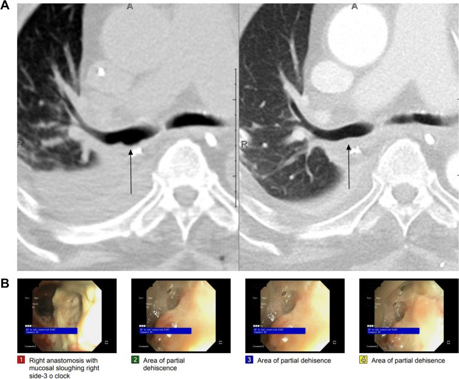
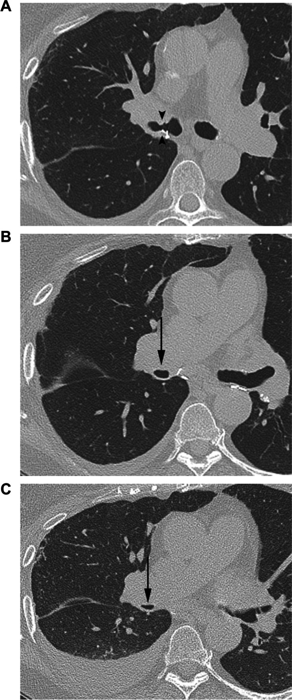
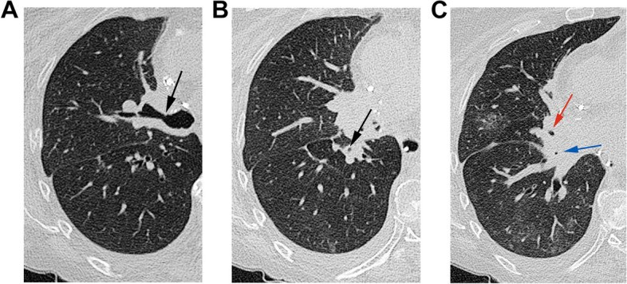
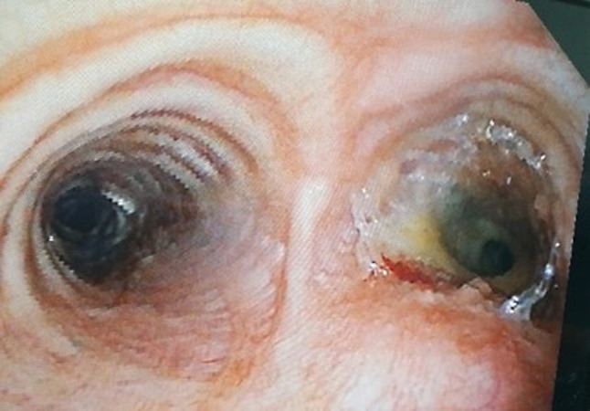

023 — Hẹp miệng nối phế quản sau ghép phổi: thiếu máu miệng nối, "phế quản biến mất" và ngưỡng can thiệp / Bronchial anastomotic stenosis after lung transplantation
Tags: pattern:hep-duong-tho pattern:hep-mieng-noi pattern:xep-phoi pattern:mat-phang-khi vung:phe-quan vung:duong-tho vung:phoi protocol:CT-nguc-lat-mong protocol:noi-soi-phe-quan score:ISHLT-airway
Mức chắc chắn (certainty): tổng hợp y văn (literature synthesis) — số liệu từ tổng quan ảnh học biến chứng ghép phổi J Cardiothorac Surg 2024 (PMC11067284, CC BY), đoàn hệ 342 ca JHLT Open 2026 (PMC12857399), đoàn hệ 651 bệnh nhân/1.191 miệng nối Transpl Int 2023 (PMC10613691), loạt can thiệp nội soi 14 ca (PMC11407335), khảo sát đa trung tâm về hệ phân độ ISHLT 2018 (PMC13279507). Nhóm không có bệnh nhân của mình.
Câu chốt: hẹp miệng nối phế quản là bệnh của thiếu máu miệng nối, không phải "sẹo xấu": động mạch phế quản của mảnh ghép không được nối lại, nên miệng nối sống nhờ dòng ngược từ động mạch phổi cho tới khi tân mạch hình thành (tới 6 tuần). Vì thế biến chứng đi theo trình tự thời gian: hoại tử/tách miệng nối trong tháng đầu → hẹp 2–3 tháng → mềm sụn (malacia) < 4 tháng**. Trên CT, **giảm > 50% diện tích lòng tại vùng trong 2 cm quanh miệng nối là ngưỡng có ý nghĩa; nhưng nội soi phế quản vừa xác nhận vừa điều trị, và chỉ can thiệp khi có triệu chứng/tắc nghẽn có ý nghĩa — không điều trị một con số trên phim.
1. Tổng quan bệnh học – cơ chế hình ảnh
1.1 Vì sao miệng nối phế quản bị thiếu máu
- Mảnh ghép phổi mất nguồn máu động mạch phế quản (thường không nối lại); miệng nối sống bằng dòng ngược chậm từ tuần hoàn phổi + tân mạch mọc vào trong khoảng 6 tuần (PMC11067284). Bất kỳ yếu tố nào làm giảm dòng này — tụt áp, thiếu dịch, thông khí kéo dài, nhiễm khuẩn, PGD (primary graft dysfunction), thuốc ức chế mTOR — đều đẩy tới hoại tử rồi hẹp.
- Trình tự mô bệnh: thiếu máu → hoại tử niêm mạc/sụn → tách (dehiscence) → tổ chức hạt → xơ hẹp; hẹp là di chứng của quá trình lành, nên hẹp không xuất hiện ngay mà sau 2–3 tháng (PMC11067284).
- Nhánh phải (bronchus intermedius) hay bị nhất vì lòng hẹp nhất (PMC11067284).
1.2 TẠI SAO hình ảnh trông như vậy (vật lý + mô bệnh)
| Dấu hiệu | Cơ chế | Cách đọc |
|---|---|---|
| Hẹp khu trú tại miệng nối trên CT | Xơ + tổ chức hạt co kéo thành phế quản; sụn có thể mất | Đo diện tích lòng ở lát mỏng 1 mm, so với phế quản ngay dưới miệng nối và bên đối diện; > 50% giảm diện tích = có ý nghĩa (PMC11067284) |
| Hẹp do mềm sụn (malacia) | Sụn hoại tử mất độ cứng → thành trước sa vào khi thở ra | Chỉ thấy khi chụp thì thở ra: > 50% giảm diện tích lòng khi thở ra (PMC11067284) → cần CT 2 thì hít vào–thở ra hoặc nội soi động |
| "Phế quản biến mất" (vanishing bronchus intermedius) | Xơ lan dọc phế quản thùy/phân thùy, không chỉ tại miệng nối | Hẹp > 2 cm cách miệng nối; gặp ở 2,5–3% ca ghép, thường ~6 tháng sau ghép (PMC11067284) |
| Khí ngoài lòng phế quản quanh miệng nối | Tách miệng nối → khí vào trung thất/mô dưới da | Đây là dấu của dehiscence, thường trong tháng đầu; khí đơn thuần không đồng nghĩa tách toàn bộ |
| Xẹp phổi/khoang khí sau hẹp | Hẹp → giảm thông khí → xẹp thùy, ứ nhầy, viêm phổi tái diễn | Xẹp một thùy tái diễn cùng bên ghép là dấu gián tiếp của hẹp |
1.3 Ngưỡng định lượng cần nhớ
- Biến chứng đường thở sau ghép: 2–18%, tử vong 2–4% (đồng thuận ISHLT 2018); hẹp là loại thường gặp nhất — 67% các biến chứng (PMC10613691).
- Đoàn hệ 1.191 miệng nối: 6,4% miệng nối có biến chứng có ý nghĩa lâm sàng; trung vị sống 101 tháng so với 136 tháng ở người không biến chứng (p = 0,044) (PMC10613691).
- Đoàn hệ 342 ca: 9,9% hẹp cần can thiệp; yếu tố nguy cơ độc lập: nam (OR 2,77; KTC 95% 1,13–6,79), PGD (OR 3,45; 1,23–9,69), cấy đường thở dương tính trước khi hẹp (OR 3,97; 1,67–9,48 — đặc biệt Pseudomonas và Gram âm); không làm tăng tử vong/thải ghép/CLAD trong đoàn hệ này (PMC12857399) — mâu thuẫn với PMC10613691, nêu rõ vì sao: khác định nghĩa "biến chứng có ý nghĩa" và cỡ mẫu.
- 145 ca ghép hai phổi: 33,1% có biến chứng đường thở; nhóm này có điểm vận mạch–co bóp cao hơn (18,0 vs 13,0; p = 0,021) và lactate cao hơn (9,1 vs 6,8; p = 0,017) (PMC12240133) → tụt áp/thời gian thiếu tưới máu là đòn bẩy phòng ngừa.
- Tách miệng nối: 1–10%, chủ yếu tháng đầu; mềm sụn: 1–4%, trong 4 tháng (PMC11067284).
- Can thiệp nội soi (27 phiên ở 14 bệnh nhân): 74,1% phiên đạt thông thoáng, 81,5% dùng nong bóng/ống cứng, 57,4% bệnh nhân đạt thông thoáng lâu dài (PMC11407335).
2. Mẫu hình + chẩn đoán phân biệt theo vị trí (gamut)
2.1 Theo vị trí so với miệng nối
- Tại miệng nối (< 2 cm): hẹp xơ sau lành tách, tổ chức hạt, hẹp do chỉ khâu, mềm sụn vùng quanh nối.
- Xa miệng nối (> 2 cm): VBIS (phế quản trung gian), hẹp do thiếu máu lan, hẹp sau nhiễm (kể cả Aspergillus), tái phát bệnh nền.
- Toàn bộ cây phế quản bên ghép: mềm sụn lan tỏa, hẹp do thải ghép mạn (BOS — bronchiolitis obliterans syndrome) — khác hẳn hẹp đường thở lớn.
2.2 Gamut theo hình thái
- Hẹp cố định (fixed): xơ, hẹp không đổi giữa 2 thì → nong/stent.
- Hẹp động (dynamic): mềm sụn, sa thành trước khi thở ra → stent là lựa chọn chính, nong đơn thuần thất bại.
- Tắc hoàn toàn: nút nhầy (mucus plug), hẹp độ d (100%), xoắn phổi (torsion) — cấp cứu.
- Không hẹp nhưng có khí ngoài lòng: tách miệng nối, rò phế quản–màng phổi.
3. Bảng so sánh phân biệt (ma trận đối chiếu)
| Thực thể (entity) | Hình ảnh điển hình | Chốt vào (rule-in) | Chốt loại (rule-out) | Gợi ý xác nhận |
|---|---|---|---|---|
| Hẹp miệng nối xơ (anastomotic stenosis) | Hẹp khu trú ≤ 2 cm quanh miệng nối, thành dày, giảm > 50% diện tích lòng, không đổi giữa 2 thì | Hẹp cố định tại miệng nối + xẹp/ứ nhầy đầu xa | Hẹp lan dọc > 2 cm hoặc thay đổi theo thì thở → nghĩ VBIS/mềm sụn | Nội soi: vòng xơ, không phải nút nhầy; nong bóng |
| Mềm sụn (malacia) | Thành trước sa vào khi thở ra, lòng phế quản giảm > 50% khi thở ra, hồi phục khi hít vào | Khác biệt hít vào–thở ra trên CT 2 thì | Hẹp như nhau 2 thì → hẹp xơ cố định | Nội soi động; CT 2 thì |
| Tách miệng nối (dehiscence) | Khí ngoài lòng quanh miệng nối, bờ phế quản không liên tục, tràn khí trung thất/màng phổi, tháng đầu | Khí quanh miệng nối + rò khí kéo dài | Khí không quanh miệng nối (do thở máy/chấn thương) → không phải tách | Nội soi; CT mô mềm |
| Nút nhầy (mucus plug) | Tắc lòng phế quản hình ống/ngón tay, đậm độ mô mềm, không dày thành, thay đổi giữa các lần chụp | Tắc trong lòng, thành mỏng, di chuyển/theo thời gian | Dày thành + hẹp cố định → hẹp thực thể | Hút qua nội soi; chụp lại sau làm sạch |
| Xoắn phổi (torsion) | Phế quản + mạch "thắt" đột ngột, phổi tăng đậm đặc, màng phổi dày, trung thất lệch | Thắt cả phế quản và mạch cùng lúc, bệnh cảnh tối cấp | Chỉ hẹp phế quản, mạch bình thường → hẹp đường thở | CTA; mổ cấp |
| Tái phát bệnh nền / hẹp do nhiễm | Hẹp lan, bờ không đều, có nốt/dày niêm mạc, bệnh cảnh nhiễm | Hẹp tiến triển ngoài vùng miệng nối, đờm/soi có nấm, vi khuẩn | Hẹp đúng vòng miệng nối, đối xứng → hẹp xơ | Soi + rửa phế quản lấy bệnh phẩm |
| Hẹp đường thở nhỏ (BOS/CLAD) | Bẫy khí, giãn phế quản, giảm đậm độ, không hẹp đường thở lớn | FEV1 giảm + hình ảnh đường thở nhỏ | Hẹp đường thở lớn thấy rõ trên CT → can thiệp nội soi được | PFT + HRCT thì thở ra |

Trên (A): hai lát CT phổi cách nhau 1 tuần sau ghép — bờ sau miệng nối phải mất liên tục, khí ngoài lòng (mũi tên). Dưới (B): nội soi xác nhận vùng tách một phần. Ảnh nguyên bản, không crop, từ Friedlander S và cs, J Cardiothorac Surg 2024, CC BY (PMC11067284), Fig. 2.4. Protocol chụp + hệ phân độ/điểm chuẩn hóa
4.1 Protocol
- CT ngực lát mỏng ≤ 1 mm, tái tạo MinIP (thickness tối thiểu 2–5 mm) theo trục phế quản để thấy hẹp dọc; hít vào tối đa + thở ra tối đa khi nghi mềm sụn.
- Đọc hai cửa sổ: phổi (lòng phế quản, xẹp, ứ nhầy) và trung thất (khí ngoài lòng, thành phế quản, hạch, mạch).
- Đo diện tích lòng trên lát vuông góc trục phế quản, so với phế quản lành ngay dưới và bên đối diện; báo % giảm diện tích chứ không chỉ "hẹp".
- Nội soi phế quản ống mềm là chuẩn xác nhận và là cửa điều trị (nong, gắp nút, đốt, đặt stent) — CT định hướng, nội soi quyết định.
- Đánh giá kèm: PFT (FEV1), cấy/rửa phế quản (nhiễm là yếu tố nguy cơ và chống chỉ định tương đối của stent), siêu âm tim nếu nghi tăng áp phổi.
4.2 Hệ phân độ ISHLT 2018 (Adult and Pediatric Airway Complications)
Bảng phân độ theo loại (I/D/S/M) × vị trí (a/b/c) × mức độ (a–d) — bảng dưới trích đúng ngưỡng (PMC13279507):
| Loại | Vị trí | Mức độ |
|---|---|---|
| I — thiếu máu/hoại tử | a. quanh miệng nối (< 1 cm); b. lan > 1 cm tới đường thở lớn; c. lan > 1 cm vào phế quản thùy/phân thùy | a. thiếu máu < 50% chu vi; b. thiếu máu 50–100%; c. hoại tử < 50%; d. hoại tử 50–100% |
| D — tách | a. phần sụn; b. phần màng; c. cả hai | a. 0–25% chu vi; b. > 25–50%; c. > 50–75%; d. > 75% |
| S — hẹp | a. tại miệng nối; b. miệng nối + thùy/phân thùy; c. chỉ thùy/phân thùy | a. giảm 0–25% diện tích; b. > 25–50%; c. > 50 đến < 100%; d. tắc 100% |
| M — mềm sụn | a. quanh miệng nối (< 1 cm); b. lan tỏa | (đánh giá động học theo thì thở ra) |
- Hẹp độ c (giảm > 50% diện tích) là ngưỡng thực hành để xem xét can thiệp (PMC11067284); độ d = tắc hoàn toàn là cấp cứu.
- Phản biện: chỉ 41,2% quốc gia trong khảo sát dùng hệ này ở 100% trung tâm, và 59,6% trung tâm muốn sửa lại hệ phân độ (PMC13279507) → dùng để chuẩn hóa báo cáo, không thay thế đánh giá lâm sàng.
flowchart TD
A[Khó thở/thở rít một bên hoặc xẹp thùy tái diễn sau ghép phổi] --> B[CT ngực lát 1 mm + MinIP, hít vào và thở ra]
B --> C{Hẹp tại miệng nối hoặc trong 2 cm?}
C -->|Không| D{Hẹp lan > 2 cm hoặc phế quản trung gian biến mất?}
D -->|Có| E[VBIS hoặc hẹp do thiếu máu/nhiễm: nội soi + cấy, nong/stent theo mức]
D -->|Không| F[Tìm nguyên nhân khác: nút nhầy, xoắn phổi, BOS, nhiễm, PE]
C -->|Có| G{Giảm > 50% diện tích lòng hoặc có triệu chứng?}
G -->|Không| H[Theo dõi lâm sàng + PFT, chụp lại khi có triệu chứng]
G -->|Có| I{Nội soi: hẹp cố định hay mềm sụn động?}
I -->|Hẹp cố định| J[Nong bóng/ống cứng; tái phát thì đặt stent hoặc phẫu thuật lại]
I -->|Mềm sụn động| K[Stent là chính; nong đơn thuần thường thất bại]
J --> L{Đang nhiễm hoạt động?}
K --> L
L -->|Có| M[Điều trị nhiễm trước, hoãn stent trừ khi tắc nghẽn đe dọa tính mạng]
L -->|Không| N[Can thiệp + theo dõi nội soi định kỳ]
5. Biến thể bình thường và cạm bẫy
- Hẹp nhẹ không triệu chứng: giảm 0–25% (độ a) có thể chỉ là biến thể lành sau nối, đừng can thiệp; chỉ theo dõi PFT và chụp lại khi triệu chứng.
- Không chụp thì thở ra → bỏ sót mềm sụn: hẹp động chỉ lộ khi thở ra; CT một thì hít vào có thể báo "bình thường".
- Nút nhầy giả hẹp: nút nhầy đậm độ mô mềm trong lòng, thành phế quản mỏng, không dày; hẹp thật có thành dày + hẹp cố định. Chụp lại sau khi hút/nội soi để tránh đặt stent oan.
- Xẹp thùy do hẹp vs do tắc nút: xẹp tái diễn cùng một thùy là dấu gián tiếp của hẹp; nhưng nguyên nhân có thể là nút nhầy — cần nội soi trước khi kết luận.
- Khí trung thất sau mổ ghép là bình thường trong vài ngày đầu; chỉ gọi tách miệng nối khi khí quanh miệng nối, kéo dài, kèm rò khí/xẹp phổi.
- Sai số đo: đo trên mặt phẳng chéo làm lòng phế quản trông hẹp hơn; luôn tái tạo vuông góc trục và so với phế quản liền kề, không đo một lát duy nhất.
- Đặt stent khi còn nhiễm hoạt động: làm tăng mô hạt, nhiễm stent và di chuyển — điều trị nhiễm trước; stent chỉ khi tắc nghẽn đe dọa tính mạng hoặc sau khi kiểm soát nhiễm.
- Nhầm với tái phát bệnh nền: hẹp lan ngoài vùng miệng nối, bờ không đều phải lấy bệnh phẩm (nấm, vi khuẩn, tế bào) trước khi quy cho "hẹp xơ".
6. Tự lượng giá — Blind Quiz (bấm để hiện đáp án)
Ca 1 — nam 67 tuổi, ghép hai phổi vì COPD, khó thở + thở rít bên phải 3 tháng sau ghép

- Bối cảnh: FEV1 giảm 25% so với mốc 6 tuần; không sốt, CRP bình thường.
- Câu hỏi: (1) Dấu hiệu ở hình A? (2) Hình B và C khác nhau vì sao? (3) Can thiệp gì và vì sao không chỉ nong?
Bấm để hiện đáp án (findings + chẩn đoán)
- Dấu hiệu: A — hẹp khu trú phế quản phải tại miệng nối (đầu mũi tên), thành dày, giảm > 50% diện tích lòng; B (hít vào) phế quản trung gian còn thông; C (thở ra) sa thành trước, gần như mất lòng = mềm sụn động.
- Chẩn đoán: hẹp miệng nối + mềm sụn (malacia) — hẹp động, không chỉ xơ cố định.
- Vì sao không chỉ nong: nong bóng xử lý được vòng xơ nhưng không giữ được thành mềm sụn; cần stent (silicone/kim loại có màng hoặc stent phân hủy sinh học) ± đốt mô hạt.
- Nguồn ảnh: Friedlander S và cs, J Cardiothorac Surg 2024, CC BY (PMC11067284), Fig. 3.
Ca 2 — nữ 61 tuổi, ghép hai phổi vì thiếu alpha-1 antitrypsin, ho kéo dài, X-quang có xẹp thùy giữa tái diễn

- Bối cảnh: không sốt; cấy đờm Pseudomonas aeruginosa dương tính 2 lần trước đó.
- Câu hỏi: Hẹp ở đâu? Có phải hẹp miệng nối không? Hướng xử trí khác gì ca 1?
Bấm để hiện đáp án (findings + chẩn đoán)
- Dấu hiệu: A hẹp phế quản thùy trên phải; B hẹp phế quản trung gian; C hẹp phế quản thùy giữa phải (mũi tên đỏ) và nhánh dưới (mũi tên xanh) — nhiều vị trí, ngoài miệng nối.
- Chẩn đoán: hẹp phế quản không tại miệng nối (non-anastomotic), dạng VBIS/thiếu máu lan — gặp ở 2,5–3% ca ghép, thường ~6 tháng sau ghép; nhiễm Pseudomonas là yếu tố nguy cơ (OR 3,97).
- Hướng xử trí: khó nong đơn thuần vì hẹp lan và tái phát; cần nội soi + cấy/kháng sinh theo kháng sinh đồ, nong ± stent, và theo dõi PFT; không đặt stent khi còn nhiễm hoạt động nếu không tắc nghẽn đe dọa tính mạng.
- Nguồn ảnh: Friedlander S và cs, J Cardiothorac Surg 2024, CC BY (PMC11067284), Fig. 4.
Ca 3 — nam 45 tuổi, hẹp phế quản phải tái phát sau 2 lần nong, đã từng đặt stent phân hủy sinh học

- Bối cảnh: khó thở tăng dần, thở rít; CT cho thấy hẹp tại miệng nối phải.
- Câu hỏi: Hình nội soi mô tả gì? Vì sao stent phân hủy sinh học có thể thất bại? Bước tiếp theo?
Bấm để hiện đáp án (findings + chẩn đoán)
- Dấu hiệu: hẹp phế quản phải (bên phải ảnh) còn stent phân hủy sinh học cũ đã tiêu một phần; lòng phế quản hẹp không đều, niêm mạc xơ.
- Vì sao thất bại: stent phân hủy sinh học mất lực đỡ theo thời gian trong khi quá trình xơ vẫn tiếp diễn; hẹp tái phát sau khi stent tiêu — cần đánh giá lại bằng CT + nội soi trước khi đặt stent mới.
- Bước tiếp theo: nội soi + nong, cân nhắc stent mới (silicone hoặc kim loại có màng), kiểm soát nhiễm, và phẫu thuật tái tạo/ghép lại nếu hẹp tái phát nhiều lần.
- Nguồn ảnh: J Cardiothorac Surg 2025 (PMC11776313), CC BY-NC-ND 4.0, Fig. 5 — ảnh nguyên bản, không crop/ghép.
Bài liên quan chéo
- 019 — Hẹp miệng nối động mạch phổi sau ghép phổi
- 049 — Theo dõi sau cắt thùy phổi bẩm sinh
- 099 — Hẹp tĩnh mạch phổi sau ablation & sau ghép phổi
- 670 — BOS sau ghép tế bào gốc/ghép phổi: bệnh của đường thở nhỏ
- 061 — Tràn khí trung thất
Disclaimer y tế: bài học dùng cho mục đích học tập, không dùng để chẩn đoán độc lập khi chưa có người hướng dẫn. Chỉ định nong/stent thuộc về kíp ghép phổi và nội soi can thiệp.